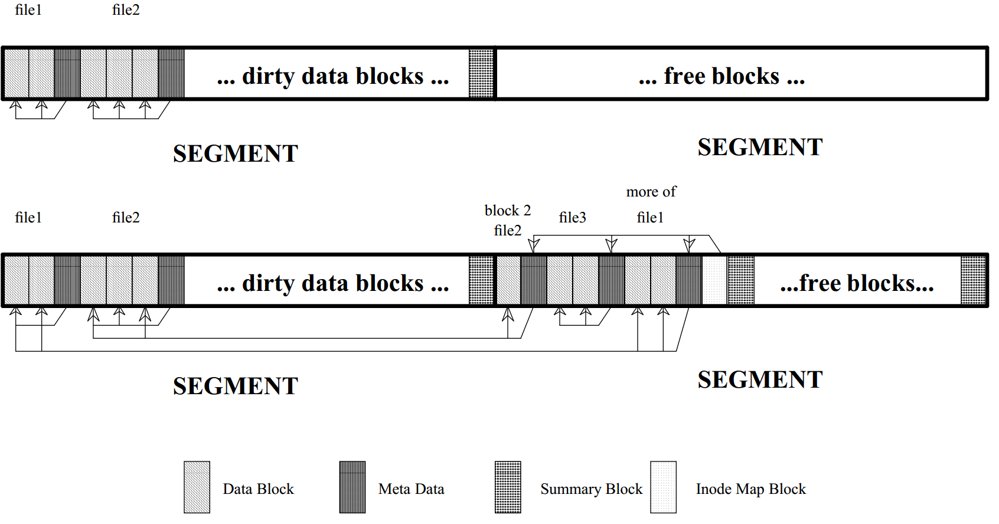

File Systems
CS422/522 Lecture 10
13 October 2014
Last updated: 13 October 2014
Recap
- Inteprocess Communication
- Modularity, scalability, security, etc
- Direct vs Indirect
- Blocking vs non-blocking
Why File Systems
- Structured approach to storing contents on disk
- Common interface to accessing persistent data
The Path
- Files -- basic unit of storage
- Directories -- separate files and directories into collections
- File systems / partitions / drives
Representation
- Windows: drive:\folder\file
- Linux: /folder/file
- Linux: /boot/kernel
Simple File System
- User-layer file system interface
- File system aware data structure
- Disk
Basic Operations on FIles
- Open -- fd = open(path, flags, mode)
- Close -- close(fd)
- Write -- write(fd, data, strlen(data))
- Read -- read(fd, &buf, buflen)
- Seek -- lseek(fd, offset, SEEK_CUR)
- Information -- fstat(fd, &stat)
File System Layout
Made up of blocks / sectors -- 512 to 4,096 bytes- Booting an OS
- Size of disk
- Data organization
- Free space

Boot sector
- Master boot record
- BIOS reads this sector into memory at 0x7c00
- BIOS jumps to 0x7c00 begins executing
- Must be able to find kernel in FS
- Can be OS specific or generic
Super block
- Disk metadata
- File system parameters
- number of inodes
- number of data blocks
Inodes
Metadata about files and directories- mode -- permissions
- owner
- access / creation / modification time
- size
- direct maps
- indirect maps
Why indirect maps
Inode data
- File -- raw binary data store in blocks
- Directory -- file containing a sequence of names
File Descriptors
- User-space -- integer
- Kernel-space:
- inode
- current offset in file
Strawman Example
- /home is mount of a file system
- ls -a /home/davidiw/hw5.sol
The Process
- lstat("/home/davidiw/hw5.sol", &stat)
- OS first accesses the inode for / in the file system mounted on /home
- Scan the directory for davidiw
- Access inode for davidiw, scan for hw5.sol
- read hw5.sol and return its attributes in stat
File System Challenges
- User interface
- Performance
- Reliability
- Protection
- Sharing
- Sychronization
A More Practical FS Approach
- File descriptor -- user / kernel interfacee
- Pathname
- Directory
- Inode
- Logging -- reliability
- Buffer cache -- performance / sychronization
- Disk

We extend superblock to contain number of log entries
Buffer Cache
- Magnetic Disk operations: 2 to 20 ms
- Flash Disk operations: 25 to 250 us
- Memory operations: 20 to 50 ns
- How many blocks to cache?
- Cache eviction/replacement
- Useful for sharing
Xv6 Read Example
cat /home/davidiw/hw5.sol- fd = open("/home/davidiw/hw5.sol", O_RDONLY)
- Scan / inode for home
- Scan home inode for davidiw
- Scan davidiw for hw5.sol
- Read hw5.sol inode into a buffer
- Allocate a fd with the inode info and return to user
- read(fd, ...)
- Read hw5.sol data from disk into buffer and then print on screen
User / Kernel Interface
6101 sys_open(void)
6120 if((ip = namei(path)) == 0){ .. }
6124 ilock(ip);
6132 if((f = filealloc()) == 0 || (fd = fdalloc(f)) < 0) { ... }
...
6139 iunlock(ip);
6142 f−>type = FD_INODE;
6143 f−>ip = ip;
6144 f−>off = 0;
6145 f−>readable = !(omode & O_WRONLY);
6146 f−>writable = (omode & O_WRONLY) || (omode & O_RDWR);
6147 return fd;
Reading inode part 1
5539 struct inode*
5540 namei(char *path)
5541 {
5542 char name[DIRSIZ];
5543 return namex(path, 0, name);
5544 }
Reading inode part 2
5504 static struct inode*
5505 namex(char *path, int nameiparent, char *name)
5506 {
5507 struct inode *ip, *next;
5508
5509 if(*path == ’/’)
5510 ip = iget(ROOTDEV, ROOTINO);
...
inode cache
5004 iget(uint dev, uint inum)
5006 struct inode *ip, *empty;
5008 acquire(&icache.lock);
5011 empty = 0;
5012 for(ip = &icache.inode[0]; ip < &icache.inode[NINODE]; ip++){
5013 if(ip−>ref > 0 && ip−>dev == dev && ip−>inum == inum){
5014 ip−>ref++;
5015 release(&icache.lock);
5016 return ip;
5017 }
5018 if(empty == 0 && ip−>ref == 0) // Remember empty slot.
5019 empty = ip;
5020 }
5026 ip = empty;
5027 ip−>dev = dev;
5028 ip−>inum = inum;
5029 ip−>ref = 1;
5030 ip−>flags = 0;
5031 release(&icache.lock);
5033 return ip;
struct inode
4011 // in−memory copy of an inode
4012 struct inode {
4013 uint dev; // Device number
4014 uint inum; // Inode number
4015 int ref; // Reference count
4016 int flags; // I_BUSY, I_VALID
4017
4018 short type; // copy of disk inode
4019 short major;
4020 short minor;
4021 short nlink;
4022 uint size;
4023 uint addrs[NDIRECT+1];
4024 };
Reading inode part 3
5504 static struct inode*
5505 namex(char *path, int nameiparent, char *name)
5506 {
5507 struct inode *ip, *next;
5508
5509 if(*path == ’/’)
5510 ip = iget(ROOTDEV, ROOTINO);
...
5514 while((path = skipelem(path, name)) != 0){
5515 ilock(ip);
Locking inodes
5053 ilock(struct inode *ip)
5054 {
5055 struct buf *bp;
5056 struct dinode *dip;
5061 acquire(&icache.lock);
5062 while(ip−>flags & I_BUSY)
5063 sleep(ip, &icache.lock);
5064 ip−>flags |= I_BUSY;
5065 release(&icache.lock);
// read if not valid
5081 }
Read if not valid
5067 if(!(ip−>flags & I_VALID)){
5068 bp = bread(ip−>dev, IBLOCK(ip−>inum));
5069 dip = (struct dinode*)bp−>data + ip−>inum%IPB;
5070 ip−>type = dip−>type;
5071 ip−>major = dip−>major;
5072 ip−>minor = dip−>minor;
5073 ip−>nlink = dip−>nlink;
5074 ip−>size = dip−>size;
5075 memmove(ip−>addrs, dip−>addrs, sizeof(ip−>addrs));
5076 brelse(bp);
5077 ip−>flags |= I_VALID;
5080 }
Block reading
4401 struct buf*
4402 bread(uint dev, uint sector)
4403 {
4404 struct buf *b;
4405
4406 b = bget(dev, sector);
4407 if(!(b−>flags & B_VALID))
4408 iderw(b);
4409 return b;
4410 }
bget cached
4365 static struct buf*
4366 bget(uint dev, uint sector)
4367 {
4368 struct buf *b;
4370 acquire(&bcache.lock);
4371
4372 loop:
4374 for(b = bcache.head.next; b != &bcache.head; b = b−>next){
4375 if(b−>dev == dev && b−>sector == sector){
4376 if(!(b−>flags & B_BUSY)){
4377 b−>flags |= B_BUSY;
4378 release(&bcache.lock);
4379 return b;
4380 }
4381 sleep(b, &bcache.lock);
4382 goto loop;
4383 }
4384 }
Not Cached
4389 for(b = bcache.head.prev; b != &bcache.head; b = b−>prev){
4390 if((b−>flags & B_BUSY) == 0 && (b−>flags & B_DIRTY) == 0){
4391 b−>dev = dev;
4392 b−>sector = sector;
4393 b−>flags = B_BUSY;
4394 release(&bcache.lock);
4395 return b;
4396 }
4397 }
4398 return 0;
4399 }
Reading inode part 4
5504 static struct inode*
5505 namex(char *path, int nameiparent, char *name)
5506 {
5507 struct inode *ip, *next;
5508
5509 if(*path == ’/’)
5510 ip = iget(ROOTDEV, ROOTINO);
...
5514 while((path = skipelem(path, name)) != 0){
5515 ilock(ip);
5525 if((next = dirlookup(ip, name, 0)) == 0){
5526 iunlockput(ip);
5527 return 0;
5528 }
5529 iunlockput(ip);
5530 ip = next;
5531 }
5536 return ip;
5537 }
Looking up directories
5361 dirlookup(struct inode *dp, char *name, uint *poff)
5362 {
5363 uint off, inum;
5364 struct dirent de;
5369 for(off = 0; off < dp−>size; off += sizeof(de)){
5370 if(readi(dp, (char*)&de, off, sizeof(de)) != sizeof(de))
5371 panic("dirlink read");
5372 if(de.inum == 0)
5373 continue;
5374 if(namecmp(name, de.name) == 0){
5375 // entry matches path element
5376 if(poff)
5377 *poff = off;
5378 inum = de.inum;
5379 return iget(dp−>dev, inum);
5380 }
5381 }
5383 return 0;
5384 }
struct dirent
3950 struct dirent {
3951 ushort inum;
3952 char name[DIRSIZ];
3953 };
Reading inode part 5 -- data
5252 readi(struct inode *ip, char *dst, uint off, uint n)
5253 {
5254 uint tot, m;
5255 struct buf *bp;
5256
5268 for(tot=0; tot<n; tot+=m, off+=m, dst+=m){
5269 bp = bread(ip−>dev, bmap(ip, off/BSIZE));
5270 m = min(n − tot, BSIZE − off%BSIZE);
5271 memmove(dst, bp−>data + off%BSIZE, m);
5272 brelse(bp);
5273 }
5274 return n;
5275 }
Reading inode part 6 -- the block address
5160 bmap(struct inode *ip, uint bn)
5161 {
5162 uint addr, *a;
5163 struct buf *bp;
5164
5165 if(bn < NDIRECT){
5166 if((addr = ip−>addrs[bn]) == 0)
5167 ip−>addrs[bn] = addr = balloc(ip−>dev);
5168 return addr;
5169 }
Reading inode part 6 -- the block address (indirect)
5170 bn −= NDIRECT;
5172 if(bn < NINDIRECT){
5176 bp = bread(ip−>dev, addr);
5177 a = (uint*)bp−>data;
5178 if((addr = a[bn]) == 0){ ... }
5182 brelse(bp);
5183 return addr;
5184 }
5187 }
File System Logs
Transactions- Series of writes
- Atomic -- all or none
- Prevents stale file system state, despite crashes
- Supports batching
File System Logs in Action
- Update a buffer cache
- Set in-memory log to write to disk
- Release for other readers / writers
- ...
- Write log to on-disk log
- Write log header to on-disk log header
- Write content to disk data
- Remove log header
Fault Tolerance
- Empty log header: all committed or interrupted
- Log header: interrupted before copying to data
Recovering from Log
- Found non-empty log header
- Read header
- Store log contents into data
- What happens to partially committed data
Xv6 Write Example
echo "Hello, World" > /home/davidiw/test- open("/home/davidiw/hw5.sol", O_CREAT | O_WRONLY)
- Scan / inode for home ...
- Find a free inode, create file shell
- Update directory with new file entry
- Return fd return to echo, echo perofms write(fd, ...)
- Start a new transaction
- Write (update) contents into 1 or more buffers
- End transaction
- Transaction queued
- Write to disk log
- Write to disk
- Erase log
Creating a file
6101 sys_open(void)
6111 begin_op();
6113 if(omode & O_CREATE){
6114 ip = create(path, T_FILE, 0, 0);
...
6132 if((f = filealloc()) == 0 || (fd = fdalloc(f)) < 0){ ... }
6139 iunlock(ip);
6140 end_op();
6141
6142 f−>type = FD_INODE;
6143 f−>ip = ip;
6144 f−>off = 0;
6145 f−>readable = !(omode & O_WRONLY);
6146 f−>writable = (omode & O_WRONLY) || (omode & O_RDWR);
6147 return fd;
Inode and directory
6057 create(char *path, short type, short major, short minor)
6063 if((dp = nameiparent(path, name)) == 0)
6064 return 0;
6065 ilock(dp);
6076 if((ip = ialloc(dp−>dev, type)) == 0)
6077 panic("create: ialloc");
6078
6079 ilock(ip);
6080 ip−>major = major;
6081 ip−>minor = minor;
6082 ip−>nlink = 1;
6083 iupdate(ip);
6092
6093 if(dirlink(dp, name, ip−>inum) < 0)
6094 panic("create: dirlink");
6096 iunlockput(dp);
6098 return ip;
Allocating an inode
4953 ialloc(uint dev, short type)
4960 readsb(dev, &sb);
4962 for(inum = 1; inum < sb.ninodes; inum++){
4963 bp = bread(dev, IBLOCK(inum));
4964 dip = (struct dinode*)bp−>data + inum%IPB;
4965 if(dip−>type == 0){ // a free inode
4966 memset(dip, 0, sizeof(*dip));
4967 dip−>type = type;
4968 log_write(bp); // mark it allocated on the disk
4969 brelse(bp);
4970 return iget(dev, inum);
4971 }
4972 brelse(bp);
4973 }
Updating a directory
5402 dirlink(struct inode *dp, char *name, uint inum)
5409 if((ip = dirlookup(dp, name, 0)) != 0){ ... }
5415 for(off = 0; off < dp−>size; off += sizeof(de)){
5416 if(readi(dp, (char*)&de, off, sizeof(de)) != sizeof(de))
5417 panic("dirlink read");
5418 if(de.inum == 0)
5419 break;
5420 }
5422 strncpy(de.name, name, DIRSIZ);
5423 de.inum = inum;
5424 if(writei(dp, (char*)&de, off, sizeof(de)) != sizeof(de))
5425 panic("dirlink");
5427 return 0;
Writing data to an inode
5302 writei(struct inode *ip, char *src, uint off, uint n)
5318 for(tot=0; tot<n; tot+=m, off+=m, src+=m){
5319 bp = bread(ip−>dev, bmap(ip, off/BSIZE));
5320 m = min(n − tot, BSIZE − off%BSIZE);
5321 memmove(bp−>data + off%BSIZE, src, m);
5322 log_write(bp);
5323 brelse(bp);
5324 }
5326 if(n > 0 && off > ip−>size){
5327 ip−>size = off;
5328 iupdate(ip);
5329 }
5330 return n;
Updating an inode
4979 iupdate(struct inode *ip)
4984 bp = bread(ip−>dev, IBLOCK(ip−>inum));
4985 dip = (struct dinode*)bp−>data + ip−>inum%IPB;
4986 dip−>type = ip−>type;
4987 dip−>major = ip−>major;
4988 dip−>minor = ip−>minor;
4989 dip−>nlink = ip−>nlink;
4990 dip−>size = ip−>size;
4991 memmove(dip−>addrs, ip−>addrs, sizeof(ip−>addrs));
4992 log_write(bp);
4993 brelse(bp);
This whole notion of logging
- We have not seen a bwrite
- We have seen begin_op, log_write, end_op
- These act as a logging layer to bwrite
Starting a transaction
4628 begin_op(void)
4630 acquire(&log.lock);
4631 while(1){
4632 if(log.committing){
4633 sleep(&log, &log.lock);
4634 } else if(log.lh.n + (log.outstanding+1)*MAXOPBLOCKS > LOGSIZE){
4635 // this op might exhaust log space; wait for commit.
4636 sleep(&log, &log.lock);
4637 } else {
4638 log.outstanding += 1;
4639 release(&log.lock);
4640 break;
4641 }
4642 }
Writing to the log
4722 log_write(struct buf *b)
4726 if (log.lh.n >= LOGSIZE || log.lh.n >= log.size − 1)
4727 panic("too big a transaction");
4728 if (log.outstanding < 1)
4729 panic("log_write outside of trans");
4730
4731 for (i = 0; i < log.lh.n; i++) {
4732 if (log.lh.sector[i] == b−>sector) // log absorbtion
4733 break;
4734 }
4735 log.lh.sector[i] = b−>sector;
4736 if (i == log.lh.n)
4737 log.lh.n++;
4738 b−>flags |= B_DIRTY; // prevent eviction
Ending the Transaction
4653 end_op(void)
4655 int do_commit = 0;
4657 acquire(&log.lock);
4661 if(--log.outstanding == 0){
4662 do_commit = 1;
4663 log.committing = 1;
4664 } else {
4666 wakeup(&log);
4667 }
4668 release(&log.lock);
4669
4670 if(do_commit){
4673 commit();
4674 acquire(&log.lock);
4675 log.committing = 0;
4676 wakeup(&log);
4677 release(&log.lock);
4678 }
Making a Commitment
4701 commit()
4703 if (log.lh.n > 0) {
4704 write_log(); // Write modified blocks from cache to log
4705 write_head(); // Write header to disk −− the real commit
4706 install_trans(); // Now install writes to home locations
4707 log.lh.n = 0;
4708 write_head(); // Erase the transaction from the log
4709 }
Writing the Log
4683 write_log(void)
4687 for (tail = 0; tail < log.lh.n; tail++) {
4688 struct buf *to = bread(log.dev,
log.start+tail+1); // log block
4689 struct buf *from = bread(log.dev,
log.lh.sector[tail]); // cache block
4690 memmove(to−>data, from−>data, BSIZE);
4691 bwrite(to); // write the log
4692 brelse(from);
4693 brelse(to);
4694 }
Writing to the Disk
4414 bwrite(struct buf *b)
4416 if((b−>flags & B_BUSY) == 0)
4417 panic("bwrite");
4418 b−>flags |= B_DIRTY;
4419 iderw(b);
Writing the Log Head
4604 write_head(void)
4606 struct buf *buf = bread(log.dev, log.start);
4607 struct logheader *hb = (struct logheader *) (buf−>data);
4608 int i;
4609 hb−>n = log.lh.n;
4610 for (i = 0; i < log.lh.n; i++) {
4611 hb−>sector[i] = log.lh.sector[i];
4612 }
4613 bwrite(buf);
4614 brelse(buf);
Completing the Transaction
4572 install_trans(void)
4574 int tail;
4575
4576 for (tail = 0; tail < log.lh.n; tail++) {
4577 struct buf *lbuf = bread(log.dev,
log.start+tail+1); // read log block
4578 struct buf *dbuf = bread(log.dev,
log.lh.sector[tail]); // read dst
4579 memmove(dbuf−>data, lbuf−>data, BSIZE); // copy block to dst
4580 bwrite(dbuf); // write dst to disk
4581 brelse(lbuf);
4582 brelse(dbuf);
4583 }
Other Types of Files Systems
- Pipes
- Devices (devfs)
- System state: procfs, sysfs
- Log / transaction
- Database
- Tape
- Flash
- Network file systems
- FUSE
Devices
- Character -- direct / unbuffered
- Block -- indirect / buffered
- /dev/null -- writes are discarded, nothing to read
- /dev/zero -- writes are discarded, reads return NUL
- /dev/full -- unable to write, returns NUL
- /dev/random | /dev/urandom -- pseudo-random streams
- /dev/sda | /dev/hda -- hard disks
procfs
- Found under /proc
- Process information /proc/$PID
- OS information
- Uptime
- Network settings
- Set -- echo $VALUE > file
- Rad -- cat file
sysfs
- Similar to procfs / devfs
- Emphasis on unified driver / device
- Change brightness on a laptop display:
cat /sys/class/backlight/intel_backlight/max_brightness > /sys/class/backlight/intel_backlight/brightness
Transactional File System
- Log in xv6 offers: atomic writes
- Never overwrite contents, requires garbage collection
- All writes should be written sequentially, like xv6 log
- Many writes can be issued together -- transaction

Database
- What happens if we insert or delete content from the middle of a file? entire file must be updated from that point on
- Databases can store large objects using B-tree:

- b-tree contains meta-data including offset and size
- data is variable size
Tape
- Wny tapes?
- inherently hot-swappable
- cooler
- rugged
- fast sequential writes
- Two approaches:
- Meta-data at head, data afterward
- Meta-data interspersed with data
Flash
- Challenges / Features not addressed by existing FS:
- Blocks must be explicitly erased before written -- takes time
- Supports random access
- Wear leveling -- rewriting same block can wear out block
- Log structured file systems
- Hardware vs software support erasing blocks / wear leveling
Network File Systems
- Share folder / files across Network
- Benefits:
- Deduplication of data
- Shared home directories
- Convenient access to common files
- Challenges:
- Access permissions
- Where to store state
- Coherency
FUSE
- File-System in User-Space
- Operations occur in a virtual file system
- Redirected toward user-space handler
- Able to write fully functional FS: NTFS, SSHFS
A Look into Xv6
System Calls
- open
- close
- write
- read
- dup
- fstat
- mkdir
- chdir
- link
- unlink
- pipe
What we avoided
- Writes
- Allocations
- The logging layer
- software / hardware IDE interface
Lab 4
Lab 4a and b should be doneLab 4 due 16 October
Next Time
I/O and DriversWednesday 1:00PM